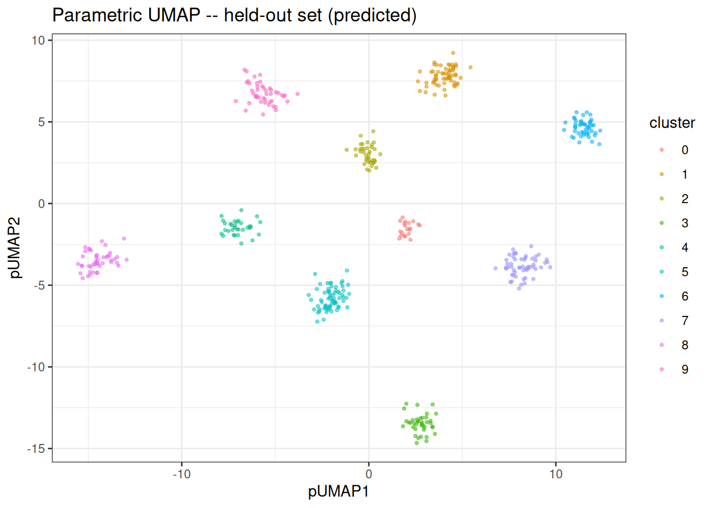
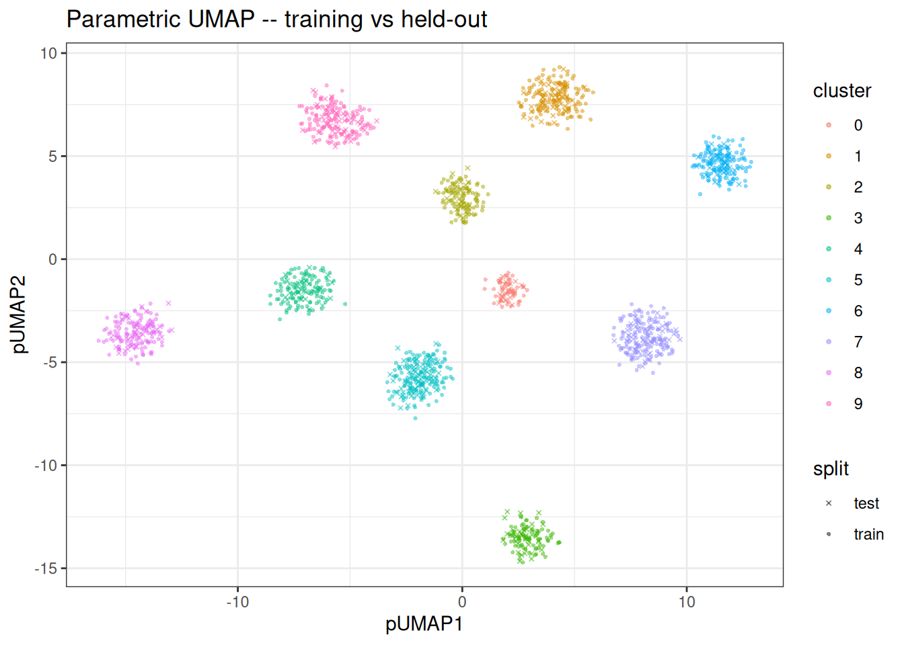

Using Parametric UMAP
Parametric UMAP
Preamble
The parametric UMAP is an extension of the UMAP algorithm. Rust-based implementations with interface to R are available in manifoldsR for standard UMAP. This version here is the parametric UMAP and we will go into more detail what is different here compared to the “normal” version below.
Intro
Standard UMAP can project new data onto an existing embedding, but doing so requires retaining the kNN index and the training embedding, then running a constrained optimisation that is both iterative and non-deterministic. Parametric UMAP takes a different approach: it trains a neural network encoder (an MLP) that learns an explicit function from the input space to the embedding space. Once trained, projecting new data is a single deterministic forward pass through the network… No neighbour lookup, no re-optimisation, and the same input always produces the same output.
The training is GPU-accelerated via wgpu (or can be also run on CPU via ndarray with OpenBLAS or Accelerate BLAS acceleration), so a compatible GPU is beneficial but not strictly required.
Generating data
We generate a small clustered data set and split it into a training and held-out set. The training set is used to fit the parametric UMAP model; the held-out set is then projected through the trained encoder via predict(). We will be using the synthetic you might know from the manifoldsR package. To make this run faster, we will use a small data set here.
set.seed(42L)
cluster_data <- manifold_synthetic_data(
type = "cluster",
n_samples = 1500L,
parameters = params_clusters(n_clusters = 10L)
)
n <- nrow(cluster_data$data)
train_idx <- sample(seq_len(n), size = floor(0.7 * n))
train_data <- cluster_data$data[train_idx, ]
train_labels <- cluster_data$membership[train_idx]
test_data <- cluster_data$data[-train_idx, ]
test_labels <- cluster_data$membership[-train_idx]Fitting the model
parametric_umap() returns a ParametricUmapModel object that holds both the training embedding and the trained encoder. As this is small data, we will just use the CPU version for 100 epochs, more than enough here.
pumap <- parametric_umap(
data = train_data,
n_dim = 2L,
k = 15L,
min_dist = 0.5,
spread = 1.0,
knn_method = "hnsw",
parametric_umap_params = params_parametric_umap(
batch_size = 128L,
n_epochs = 100L
),
use_gpu = FALSE,
seed = 42L
)
pumap
#> Parametric UMAP Model
#> Samples: 1050 | Features: 32 | Embedding dims: 2
#> k: 15 | min_dist: 0.500 | spread: 1.0 | knn: hnswThe training embedding is stored in pumap$embedding and can be visualised directly.
train_df <- as.data.table(pumap$embedding) |>
setnames(c("pUMAP1", "pUMAP2"))
train_df[, cluster := as.factor(train_labels)]
ggplot(train_df, aes(x = pUMAP1, y = pUMAP2)) +
geom_point(aes(colour = cluster), size = 0.75, alpha = 0.5) +
theme_bw() +
ggtitle("Parametric UMAP: training set")
Predicting on new data
Because the model has learnt an explicit mapping, we can embed the held-out data without re-running the full algorithm.
test_embedding <- predict(pumap, newdata = test_data)
test_df <- as.data.table(test_embedding) |>
setnames(c("pUMAP1", "pUMAP2"))
test_df[, cluster := as.factor(test_labels)]
ggplot(test_df, aes(x = pUMAP1, y = pUMAP2)) +
geom_point(aes(colour = cluster), size = 0.75, alpha = 0.5) +
theme_bw() +
ggtitle("Parametric UMAP -- held-out set (predicted)")
Comparing training and held-out embeddings
We can overlay both sets to confirm that the encoder generalises and places held-out points in consistent positions relative to the training embedding.
train_df[, split := "train"]
test_df[, split := "test"]
combined_df <- rbindlist(list(train_df, test_df))
ggplot(combined_df, aes(x = pUMAP1, y = pUMAP2)) +
geom_point(
aes(colour = cluster, shape = split),
size = 0.75,
alpha = 0.5
) +
scale_shape_manual(values = c(train = 16, test = 4)) +
theme_bw() +
ggtitle("Parametric UMAP -- training vs held-out")
Notes
Parametric UMAP inherits the same strengths and weaknesses as standard UMAP with respect to the loss function: it excels at preserving cluster structure but can distort continuous manifolds. The key advantage is the reusable encoder: once trained (even if a bit slower), embedding new data is a single forward pass through the network rather than a full re-optimisation. Just be wary of out-of-distribution predictions… If you have a massive batch effect things won’t look pretty.